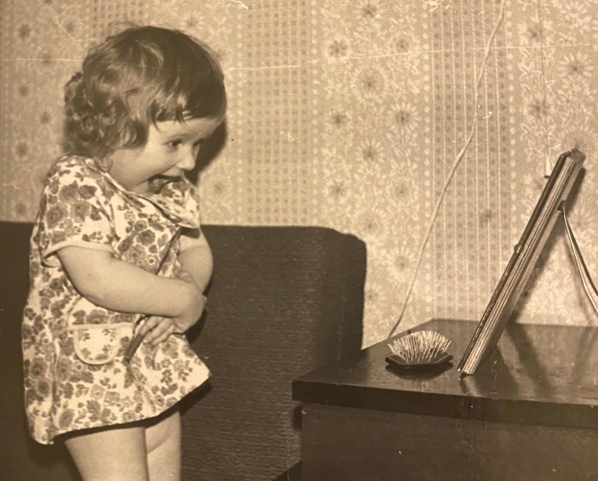
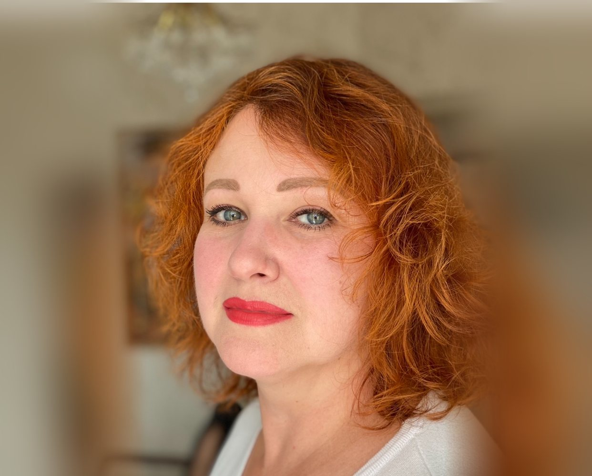
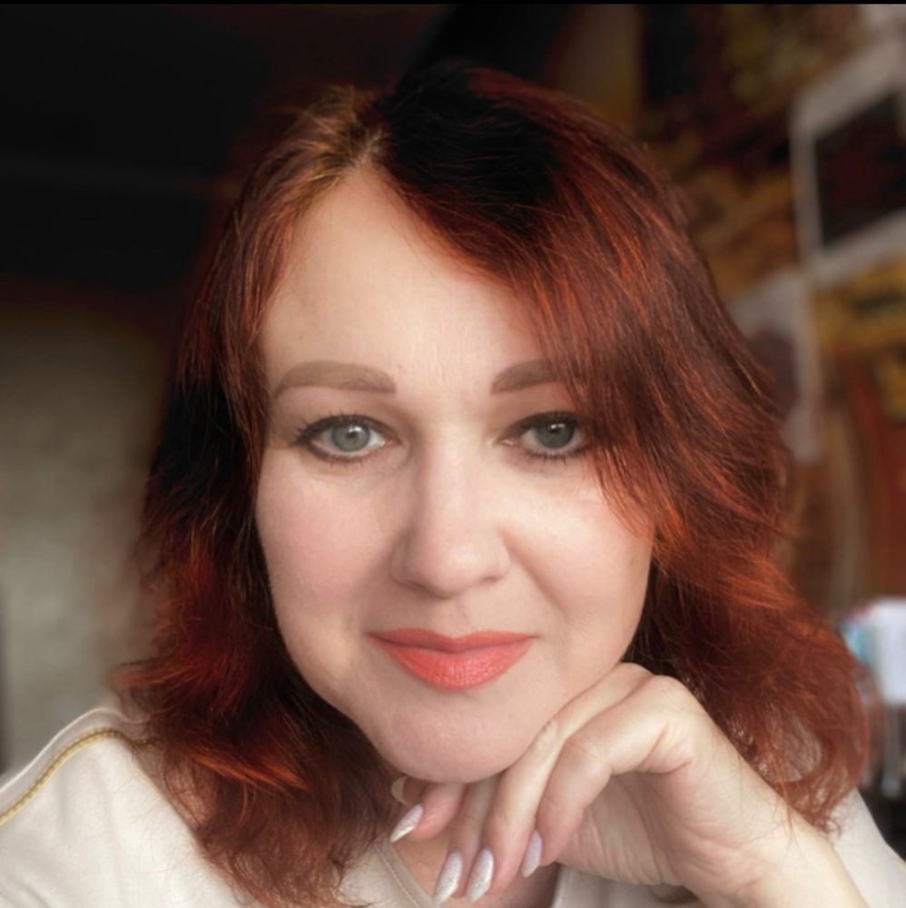
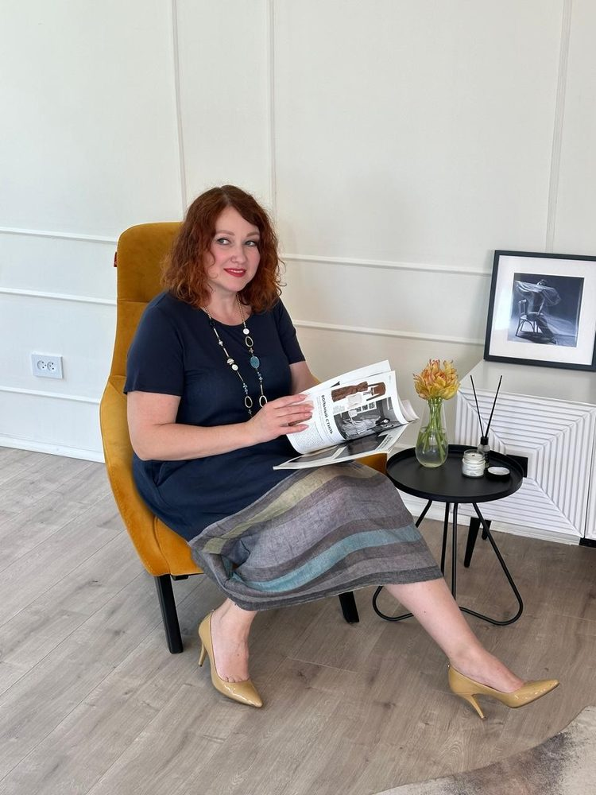
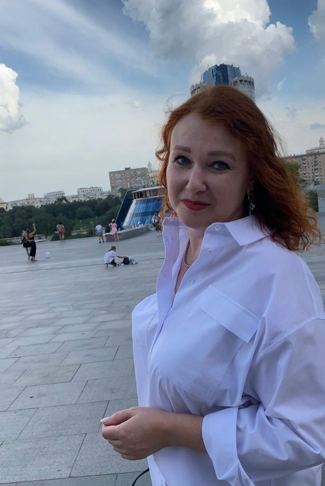

Ты столько всего перепробовала.
Почему же до сих пор не легче?
Когда внутри боль, никакие «надо любить себя» не работают.
Ты это знаешь не хуже меня. Ты читала книги, ходила к психологу, делала практики. Может быть, была на расстановках или на регрессии. Ты столько про себя поняла.
А потом снова срываешься на мужа и полночи грызёшь себя. Снова считаешь дни до зарплаты. Снова молчишь там, где хотелось сказать. И думаешь: «Со мной что-то не так. Наверное, это просто мой характер».
Это не характер. И с тобой всё в порядке. Просто до корня ещё никто не добрался.
Меня зовут Ирина Дудкина. 14 лет я помогаю женщинам находить этот корень и убирать его. За эти годы у меня было больше тысячи клиенток из разных стран. И я точно знаю: причину, из-за которой ты годами ходишь по кругу, можно убрать быстро. Иногда за одну сессию.
Проверь себя прямо сейчас
Прочитай и честно отметь, что про тебя:
- «Я делаю всё для семьи, но меня не ценят».
- «Я много учусь, а деньги приходят через раз».
- «Я раздражаюсь на мужа и детей, а потом чувствую вину».
- «У меня есть потенциал, но я никак не могу его реализовать».
- «Я устала быть сильной. Хочу, чтобы кто-то позаботился обо мне».
Узнала себя хотя бы в двух фразах? Это не ты «какая-то не такая». Это болевые заряды, которые сидят у тебя внутри.
Что такое болевой заряд
Это не просто обида или неприятное воспоминание. Это застывшая боль. Она осталась в теле и в подсознании с того момента, когда тебе было больно, страшно или стыдно. А иногда она даже не твоя: досталась по роду, от мамы и бабушки.
В такой момент маленькая девочка принимает решение:
- «Я недостойна».
- «Меня нельзя любить просто так».
- «Чтобы быть нужной, надо быть полезной».
- «Мне нельзя ошибаться».
Или случается предательство, потеря, удар, и ты закрываешься, чтобы больше не чувствовать.
Ты давно выросла и забыла об этом решении. А оно до сих пор управляет твоей жизнью, тихо и незаметно. Поэтому любые попытки что-то изменить работают ненадолго или не работают вовсе.
Можно годами ходить к психологу, чтобы наладить отношения, а они всё равно не клеятся. Потому что внутри сидит: «Я недостойна любви».
Можно учиться продажам и внедрять воронки, а деньги всё равно не идут. Потому что внутри сидит: «Деньги — это грязь» или «Мне нельзя много зарабатывать».
Можно пройти ещё один курс, а проявляться всё равно страшно. Потому что внутри сидит: «Не высовывайся».
Это как вытирать воду на полу, когда кран всё ещё открыт. Можно вытирать годами. А можно закрыть кран.
Как я сама к этому пришла
Я с детства была удобной. Про меня говорили: «Куда посадишь, там и сидит». Послушная хорошая девочка.


В 18 лет вышла замуж. По образованию я учитель начальных классов, а поработать успела и в детском саду, и бухгалтером, и в семейном бизнесе, и даже директором ломбарда.
И всё это время я искала себя. Училась всему, что откликалось: фэн-шуй у Натальи Правдиной, нумерология (в том числе у Кристины Егиазаровой), врождённые таланты, регрессология, многомерные расстановки, целительство, раскрытие ясновидения. Стала сертифицированным экспертом и куратором марафонов сервиса «Эволюция». Каждый метод я сначала проверяла на себе, потом в работе с клиентами.
Знаний становилось всё больше. А внутри всё равно чего-то не хватало. Деньги приходили и уходили. Я умела помогать другим, но шла мимо собственной боли.
Около пяти лет назад у меня случился кризис в отношениях. Я много обижалась и жила из позиции жертвы. И мой наставник сказал фразу, которая всё перевернула:
«Развернись к себе. Меняй себя — и увидишь, как меняется мир».
Я развернулась. Пошла не за новым методом, а внутрь, к своим болевым зарядам. Нашла их и убрала. И изменилась не только я. Изменилась реальность вокруг.
Тогда я поняла главное: всё решает умение найти и убрать первопричину боли. Ту самую занозу, которая сидит внутри и искажает всё. А сейчас я ещё и практикую раджа-йогу и беру её методы в работу: с ними я помогаю ещё быстрее.
Как я работаю
Я не подгоняю тебя под один метод. Я подбираю инструменты под тебя.
- Дата рожденияНе потому, что я верю в судьбу, которую нельзя изменить. Дата рождения — это карта твоих врождённых энергий. Она показывает, где ты в плюсе (это твои суперсилы), а где в минусе: где ты сливаешь силы, раздражаешься, откладываешь жизнь на потом. И подсказывает мне, как говорить именно с тобой.
- ЯсновидениеЯ вижу, где застряла боль: в теле, в поле, в родовой системе. Где тот самый заряд, который мешает тебе дышать. Это не магия, а навык, который я развивала годами.
- Многомерные расстановкиОни показывают ситуацию целиком, как спектакль, где расставлены все роли. Становится видно, что происходит на самом деле, и прямо в процессе мы это исцеляем.
- РегрессияЕсли корень уходит в детство или в родовую память, мы идём туда. Не чтобы пережить боль заново, а чтобы найти момент, где было принято то самое решение, и переписать его. С любовью, а не через боль.
- Энергочистка и целительствоПеред глубокой работой убираем всё чужое: родовые программы, чужие ожидания, которые ты тащишь как свой чемодан. Эти практики работают на расстоянии, поэтому мы встречаемся онлайн, где бы ты ни жила.
- И главное: я учу тебя трансформировать состояниеЯ не делаю всё за тебя и не привязываю тебя к себе на годы. Травмы поднимаются слоями, в разные периоды жизни. Поэтому важно, чтобы ты умела сама возвращать себя в равновесие, когда меня нет рядом.
Что меняется, когда заряд уходит
Меняется всё. Не потому, что ты стала больше стараться. А потому, что исчезает то, что искажало реальность. Ты начинаешь действовать из спокойствия, а не из боли. И мир начинает отвечать тебе по-другому.
Вот несколько историй моих клиенток. Имена я не называю.
Жизнь превратилась в постоянные проверки и скандалы. На расстановке мы вышли на корень — её детскую травму, тот самый крючок, на котором держался этот сценарий. Проработали его, и женщина изменила своё поведение, восприятие. И через мужа стало заметно, что сценарий ушёл, он по-другому стал себя вести. Семья начала меняться с уровня причины, а не через уговоры «вести себя иначе».
Эксперт с опытом и кучей обучений, но к клиентам не шла: что-то каждый раз останавливало. Нашли болевой заряд вокруг проявленности и страх «меня осудят». После работы у неё появились первые клиенты и первые деньги от любимого дела.
«Всё хорошо, а расслабиться не могу». Нашли ранний детский эпизод, где было принято решение: «Расслабляться нельзя, будет плохо». Убрали его. Пришла внутренняя тишина, о которой она давно забыла.
Молодая мама и предпринимательница: «Энергии нет, а дел — гора». Внутри сидели программы «я должна» и «я сама». Мы сняли главный блок, я дала ей практики. Через три недели она написала: «Запустила давно отложенный проект! Чувствую, как силы прибывают изнутри».
Это не магия. Это работа с первопричиной.
Больше отзывов — в моей группе с отзывами, там они разложены по темам. Дипломы — здесь.
Я не гуру. Я иду рядом
Я не стою над тобой и не учу, как правильно жить. Я сама была там, где сейчас ты. Я знаю, каково это: отдаёшь себя, а в ответ пустота. И не знаешь, за что хвататься.

Со мной можно не держать лицо. Можно быть уставшей, злой, растерянной. Я умею вдохновить и дать хороший пендаль, но работаю нежно и бережно.
Я и сейчас исцеляю свои детские травмы, слоями: они поднимаются в разные периоды жизни. И я не боюсь показывать свою уязвимость. Потому что знаю: именно в ней моя настоящая сила.
Как проходит работа
Встречаемся онлайн, по видеосвязи. Ты рассказываешь, что болит. Я смотрю твою дату рождения и считываю, где сидит главный заряд. Ты увидишь корень своей ситуации и поймёшь, что можно исцелить, убрать и изменить. Диагностика — это уже начало исцеления: когда видишь причину, становится легче дышать.
Если захочешь идти дальше:
- 4 исцеляющие сессии онлайн, раз в неделю, по часу, и пятая в подарок;
- практики между сессиями, чтобы закрепить новое состояние;
- я на связи весь месяц: можно задавать вопросы, разбирать ситуации, получать ответы;
- в подарок месяц в моём закрытом клубе «МОЁ СОСТОЯНИЕ» со всеми эфирами.
Моя цель — чтобы через месяц ты жила по-другому. Не «чуть-чуть лучше», а по-настоящему иначе: из равновесия, а не из выживания.
Если сомневаешься, можно начать с одной сессии. Мой принцип: одна сессия — одна боль стирается.
Частые вопросы
Я уже была у психолога, и не помогло. Почему сейчас получится?
Потому что мы не будем месяцами разговаривать о проблеме. Осознать — мало. Мы найдём, где она началась, и уберём заряд, который её держит.
Сколько нужно сессий?
Обида часто уходит за одну сессию, и отношения с близкими налаживаются. Сомнения и неуверенность — тоже за одну. Страх проявляться — за две-три: ты перестаёшь бояться и начинаешь действовать. Глубокий, многослойный запрос — за три-четыре.
«Сейчас нет денег. Займусь в следующем месяце».
Диагностика бесплатная и ни к чему не обязывает. После неё ты сама решишь, что дальше. А пока посчитай честно, во что тебе уже обходится этот заряд: в деньгах, которые утекают, в отношениях, в годах, которые проходят мимо.
Приглашаю тебя на диагностику
Не потому, что мне нужно что-то продать. А потому, что, пока ты не увидишь свою занозу, ты будешь биться в закрытую дверь. Терять силы, время, себя. Откладывать счастье на потом.
Можно и дальше ждать «следующего месяца», «когда будут деньги», «когда станет полегче». Но само не станет. Заряд не рассосётся оттого, что его не трогают.

Если внутри что-то отозвалось, сделай шаг.
Напиши мне «ДИАГНОСТИКА»
И пришли свою дату рождения. Мы найдём твой главный корень, и ты увидишь, что с ним делать. Без давления: решение всегда за тобой.
Написать Ирине
Жизнь — не черновик. И ждать больше не нужно.
Обнимаю, твоя Ирина ❤️
P.S. Если ты пока просто присматриваешься, подпишись на мой канал «ВРЕМЯ ПРОБУЖДЕНИЯ с ИРИНОЙ». Там я каждый день пишу о состоянии, деньгах и отношениях, даю практики и отвечаю на вопросы подписчиц.